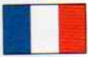
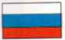
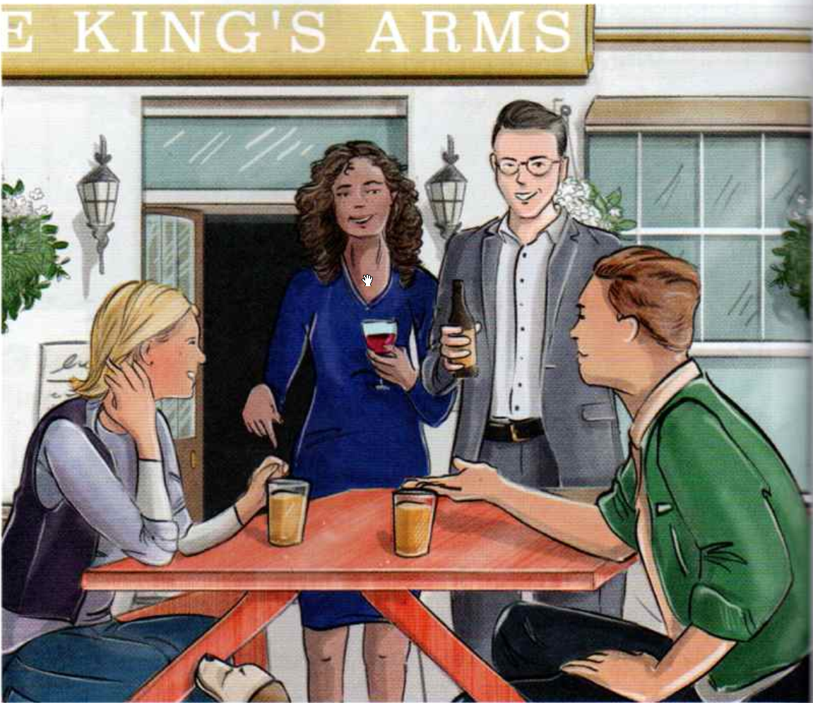
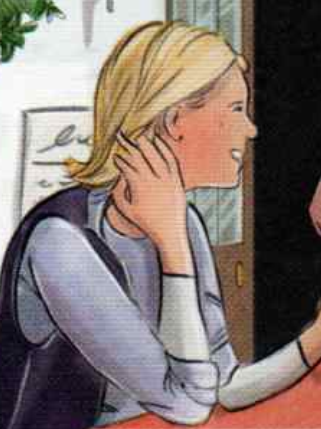
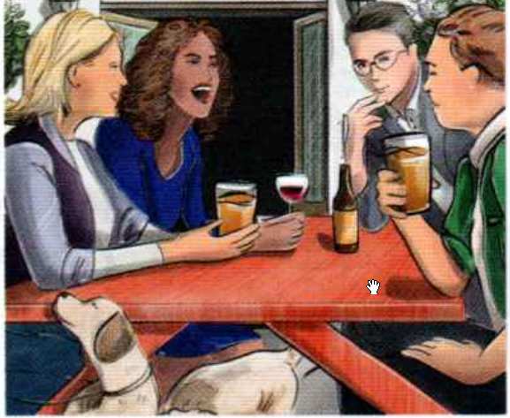
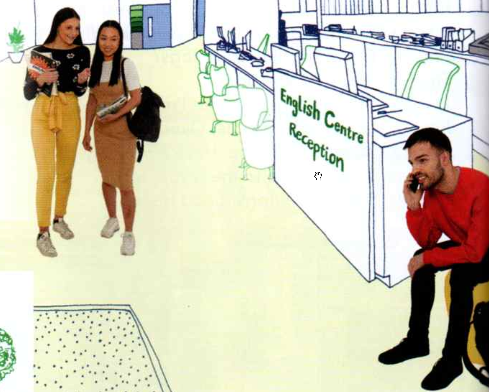
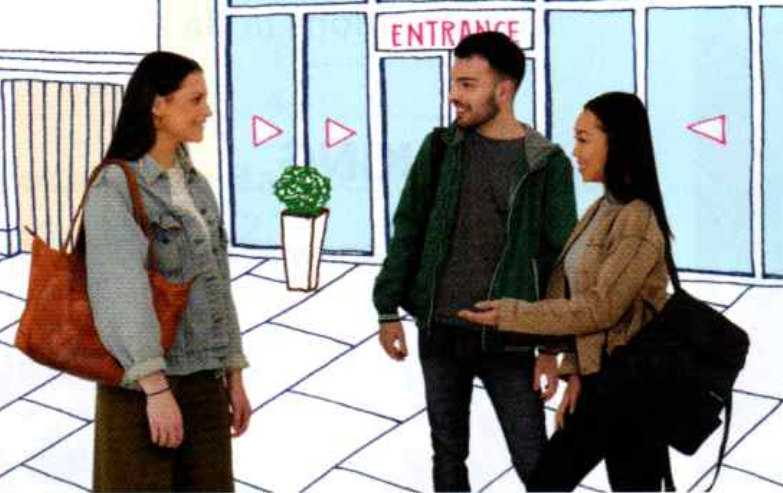
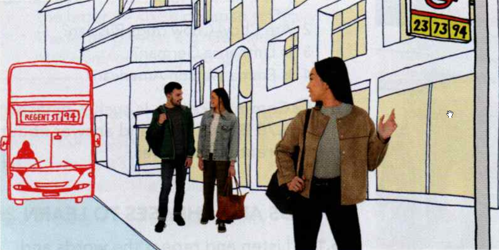

° nationalities ° nationality ° brazilian ° egyptian ° french ° german ° japanese ° mexican ° polish ° russian ° spanish ° swiss ° british
| Country -> | Nationality |
|---|---|
| Brazil | Brazilian |
| China | Chinese |
| Egypt | Egyptian |
| England | English |
| France | French |
| Germany | German |
| Italy | Italian |
| Japan | Japanese |
| Mexico | Mexican |
| Poland | Polish |
| Russia | Russian |
| Spain | Spanish |
| Switzerland | Swiss |
| Turkey | Turkish |
| the United States | American |
| the UK | British |
° jazz ° chess
jazz /dʒ/ Japan Germany Egypt chess /tʃ/ Chinese French shower /ʃ/ Spanish Polish Egyptian
He isn’t from Egypt, he’s German. It isn’t French, it’s Chinese. She isn't Spanish, she’s Polish.
| I'm from ... -> | He's ... | |
|---|---|---|
| 1 | I’m from China. | He’s Chinese. |
| 2 | I'm from Spain. | She’s Spanish. |
| 3 | I’m from Japan. | He’s Japanese. |
| 4 | I’m from Switzerland. | She’s Swiss. |
| 5 | I’m from the USA. | He’s American. |
| 6 | I'm from Italy. | She’s Italian. |
| 7 | I’m from Germany. | He’s German. |
| 8 | I’m from Mexico. | She’s Mexican. |
| 9 | I’m from England. | He's English. |
| 10 | I’m from Turkey. | She’s Turkish. |
| 11 | I’m from Poland. | He’s Polish. |
| 12 | I’m from Egypt. | She’s Egyptian. |
| 13 | I’m from Brazil. | He’s Brazilian. |
| 14 | I’m from France. | She’s French. |
| 15 | I’m from Russia. | He’s Russian. |
| 16 | I’m from the UK. | She’s British. |
° Jessica, Jim, Charles, Rachel ° they ° free ° we ° we’re ° Canada ° oh

| Jessica, Jim from Canada | Charles, Rachel |
|---|---|
|  | |
| Excuse me. Are they free? | |
| Yes, they .... Please ... down. | |
| ... I’m Jessica. Hi. And ... Jim. | |
| Are you ...? | |
| No, we ... We’re from Canada. | |
| Oh, OK! We’re ... I’m Charles. | |
| And I’m Rachel. | |
| Nice ... you. |
| Jessica, Jim | Charles, Rachel |
|---|---|
| Excuse me. Are they free? | |
| Yes, they are. Please sit down. | |
| Thanks. I’m Jessica. Hi. And I’m Jim. | |
| Are you American? | |
| No, we aren’t. We’re from Canada. | |
| Oh, OK! We’re English. I’m Charles. | |
| And I’m Rachel. | |
| Nice to meet you. |
° plural ° they’re
| Full form | Contraction |
|---|---|
| We are American. | We’re American. |
| You are Egyptian | You’re Egyptian. |
| They are German. | They’re German |
| Full form | Contraction |
|---|---|
| We are not American. | We aren’t American. |
| You are not Egyptian. | You aren’t Egyptian. |
| They are not German. | They aren’t German |
| [?] | [+] | [-] |
|---|---|---|
| Are we late? | Yes, you are. | No, you aren’t. |
| Are you from Russia? | Yes, we are. | No, we aren't. |
| Are they Mexican? | Yes, they are. | No, they aren’t. |
| [+] -> | [?] | |
|---|---|---|
| 1 | You’re Chinese. | Are you Chinese? |
| 2 | We’re late. | Are we late? |
| 3 | They’re in class 2. | Are they in class 2? |
| 4 | You’re Italian. | Are you Italian? |
| 5 | They’re English. | Are they English? |
| 6 | We’re in room 5. | Are we in room 5? |
| 7 | They’re Japanese | Are they Japanese? |
° oxford ° oxford’s ° beautiful ° business ° but ° today's ° day ° tourists ° ooh ° dogs ° they're ° with ° over ° there

| Jessica, Jim from canada | Charles, Rachel |
|---|---|
| Where in England are you from? | |
| We’re from here, ... from Oxford. | |
| Oxford’s a beautiful city! | |
| Yes, it is. Are you on holiday? | |
| No we aren’t, we’re on business. But today's a free day. Yes, we’re tourists today! Ooh. What’s that? Oh ... Are they your dogs? | |
| Yes, they are. Sit. Sit! | |
| They're very nice. But I’m not very good with dogs. Look - a free table. Over there. Nice to meet you. Have a nice day. | |
| Thanks. Nice to meet you too. Bye. Good dogs, good dogs. | |
| 1: Jessica | Excuse me. ... free? |
| 2: Rachel | ... on holiday? |
| 1: Jessica | Excuse me. Are they ...? |
| 2: Rachel | Are you on ...? |
| 3: Jim | We’re on .... |
| 4: Jessica | What’s ...? |
| 5: Jessica | Have a nice ...! |
| 6: Charles | Nice to meet you, .... |
| 1: Jessica | Excuse me. Are they free? |
| 2: Rachel | Are you on holiday? |
| 3: Jim | We’re on business. |
| 4: Jessica | What’s that? |
| 5: Jessica | Have a nice day! |
| 6: Charles | Nice to meet you, too. |
Excuse me. Are they free? Are you on holiday? We’re on business. What’s that? Have a nice day! It’s a beautiful city. tourists dogs over there
° Jména: Pia, Lin, Alex ° who’s ° old ° looking

| Pia | Lin |
|---|---|
| Who’s he? | |
| He’s Alex. He’s in my class. | |
| Where’s he from? | |
| He’s from Mexico. | |
| How old is he? | |
| He’s 22 I think. | |
| He’s very good-looking! |
Complete the information on the card.
° fine ° this ° bus ° stop ° number

| Pia | Lin, Alex |
|---|---|
| Hi, Pia. How are you? | |
| Hi, Lin. I’m fine, and you? | |
| I’m fine too. This is Alex. He’s in my class. Alex, this is Pia. | |
| Hi, Alex! | |
| Alex: Hi. What class are you in? | |
| That’s my bus! Bye. See you tomorrow! | |
| Bye. |

| Pia | Alex |
|---|---|
| Where are you from Pia? | |
| I’m from Italy. This is my bus stop. Bye, Alex. Nice to meet you. | |
| Nice to meet you, too, Pia. Er, what’s your phone number? | |
| Sorry, my bus! It’s 07365... |
° that's
Lin Hi, Pia. How are you? Pia Hi, Lin. I’m fine, and you? Lin I’m fine too. This is Alex. He’s in my class. Alex, this is Pia. Pia Hi, Alex! Alex Hi. What class are you in? Lin That's my bus! Bye. See you tomorrow! Alex Bye. Where are you from Pia? Pia I’m from Italy. This is my bus stop. Bye, Alex. Nice to meet you. Alex Nice to meet you, too, Pia. What’s your phone number? Pia Sorry, my bus! It’s 07365...
° who
How What Where Who
° who's ° friend ° what's ° molly ° modena
1/ A: Where are you from? B: I’m from Germany.
2/ A: How are you? B: Fine, thanks.
3/ A: Who's he? B: He’s a friend.
4/ A: What's your name? B: Molly.
5/ A: Where’s Modena? B: It’s in Italy.
6/ A: How old are you? B: 26.
7/ A: What’s your phone number? B: 07702 960836.
° questions ° email ° johng@gmail ° com ° brighton ° when’s ° concert
A: Who’s Tom? B: He’s a friend. A: What’s your email? B: johng@gmail.com A: Where are you from? B: I’m from Brighton in England. A: When’s the concert? B: It’s on Tuesday. A: How are you? B: I’m fine, thanks. A: How old is she? B: She’s ten.
03069 990 375
1: 028 901 80361 2: 08081 570 724 3: 0131 496 0638
° eleven ° twenty ° twelve ° thirteen ° fourteen ° fifteen ° sixteen ° seventeen ° eighteen ° nineteen
eleven twelve thirteen fourteen fifteen sixteen seventeen eighteen nineteen twenty
° hundred ° thirty ° forty ° fifty ° sixty ° seventy ° eighty ° ninety
twenty-one twenty-two thirty thirty-three forty forty-four fifty fifty-five sixty sixty-six seventy seventy-seven eighty eighty-eight ninety ninety-nine a hundred
15 97 11 100 40 29 16 62 56 78 34 81
1: 13 2: 14 3: 15 4: 16 5: 17 6: 18 7: 19 30 40 50 60 70 80 90
1: 13 2: 40 3: 50 4: 16 5: 70 6: 18 7: 19
° address ° king ° street ° near ° come ° martin ° blunt ° much ° more ° thing ° james85@ukmail
1 A: Great. OK, see you on Tuesday. B: Yes. Oh, what’s your phone number? A: It’s, er, 020 7946 0415.
2 A: Thank you. What’s your address, please? B: It’s 57 King Street. Very near here.
3 A: Come in, sit down. You’re Martin Blunt, right? B: Yes. A: And how old are you, Mr Blunt? B: I’m 39...
4 A: Thank you very much. Er, one more thing. What’s your email? B: It’s james85@ukmail.com.
° later ° bedroom ° kitchen ° garden ° big ° small ° south
Who's he? How old is he? He's very good-looking. How are you? I’m fine. This is Alex. That’s my bus. This is my bus stop. What class are you in? What’s your phone number? See you later, a bedroom a kitchen a garden big small in the south of England
° revise ° & ° check ° 1&2 ° these
Can you understand these people?
° interviewer ° jayna ° vera ° moscow ° capital ° richard ° mairi ° mobile ° la ° lain ° dot ° smith ° yahoo
1 I = interviewer, J = Jayna I What’s your name? J Jayna. 1: How do you spell it? J J-A-Y-N-A.
2 I = interviewer, V = Vera I Where are you from? V I’m from Russia. I Where in Russia? V Er, Moscow - capital.
3 I = interviewer, R = Richard I How old are you? R I’m sixty-six.
4 I = interviewer, M = Mairi I What’s your mobile phone number? M It’s oh seven five six, four three seven eight.
5 I = interviewer, la = lain I What’s your email address? la It’s lain dot Smith at yahoo dot com.